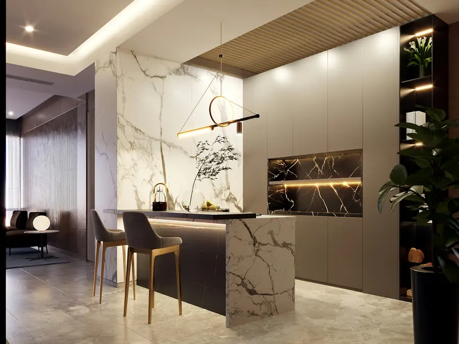
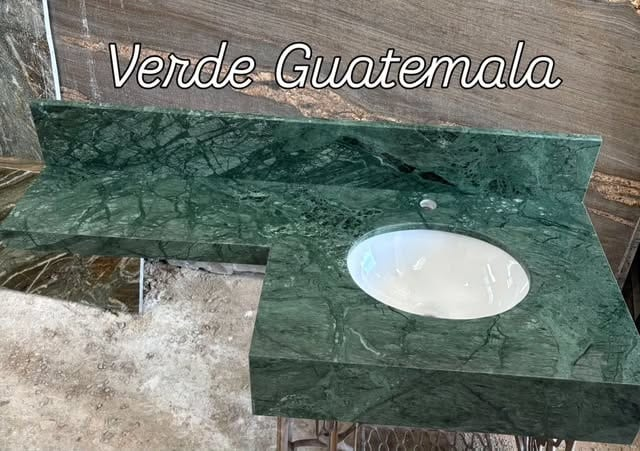
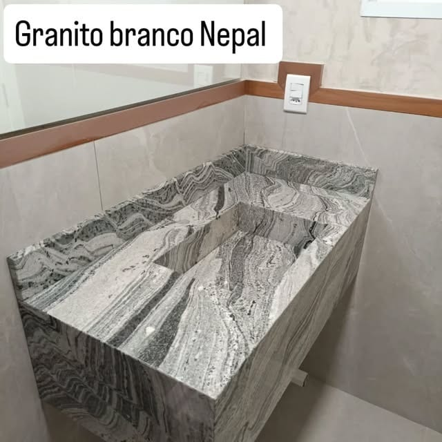
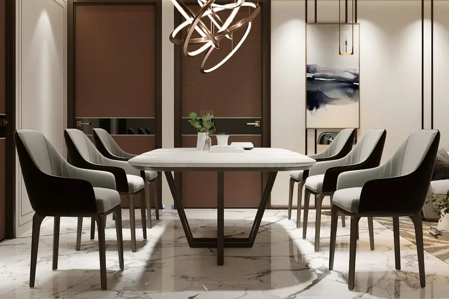
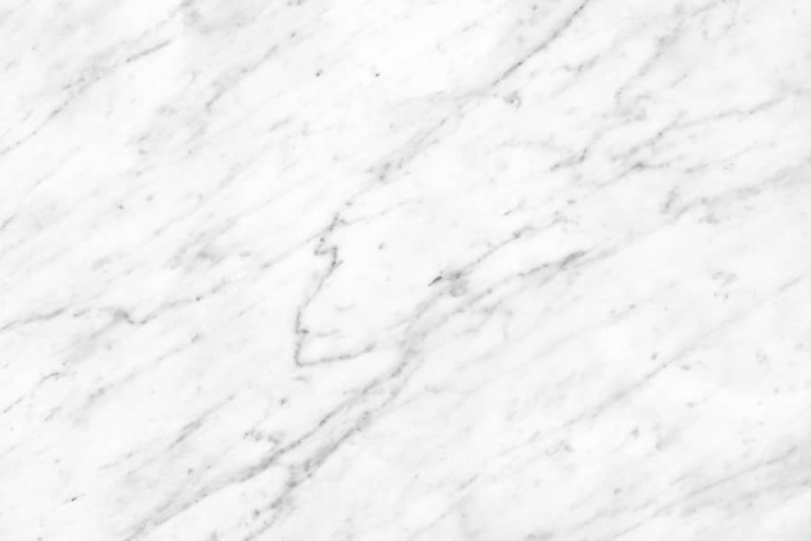
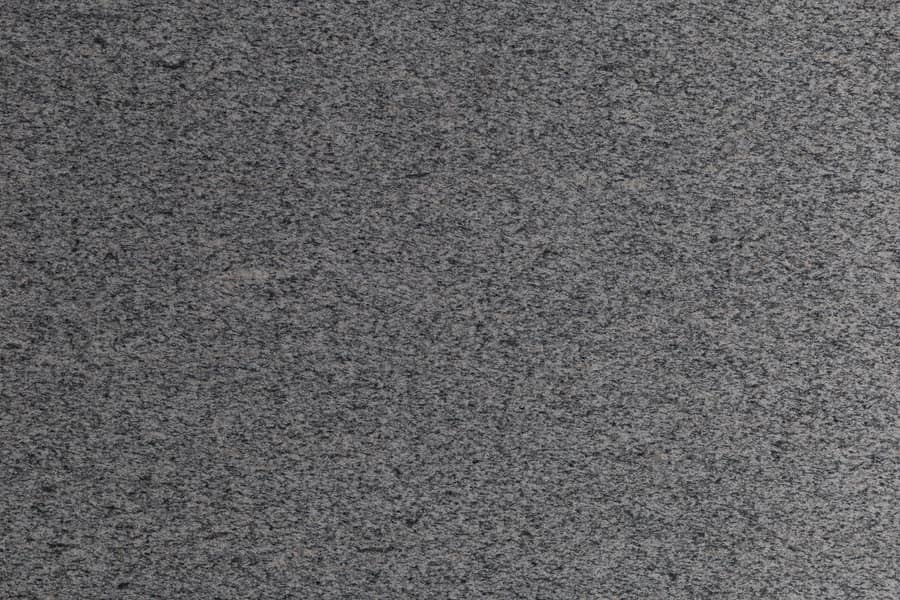
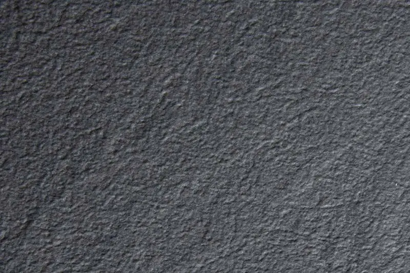
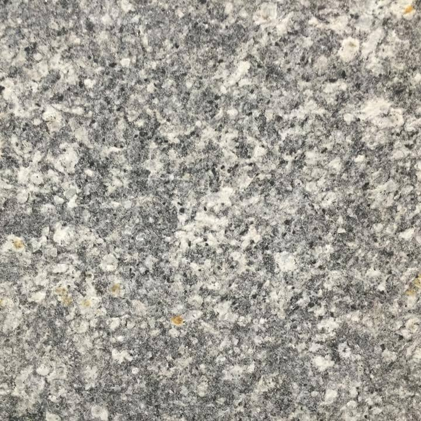

Cozinhas
Ilhas, bancadas e pias em pedra para o dia a dia da cozinha.
Marmoraria em Contagem · MG
Pias, bancadas, mesas e bancos em pedras que valorizam cada detalhe do seu projeto.
Marmoraria em Contagem/MG

Av. Dílson de Oliveira, 585. Segunda a sexta, das 7h30 às 17h30.
Peças em pedra feitas para as medidas do seu espaço.
Mármore, granito, ardósia e miracema.
Alguns trabalhos publicados pela Rocha Pedras: cozinhas, lavabos, bancadas e cubas em pedra. Veja mais no Instagram @rochapedras.


Pias, bancadas, mesas e bancos pensados a partir do seu espaço e das suas referências.
Ilhas, bancadas e pias em pedra para o dia a dia da cozinha.
Bancadas com cuba de apoio ou cuba esculpida na própria pedra.

Peças em pedra para compor a sua casa. Envie as medidas e as suas referências.
Mármore, granito, ardósia e miracema. Texturas ilustrativas: consulte as opções disponíveis.
Veios naturais e visual elegante para bancadas, lavatórios, mesas e detalhes que pedem destaque.

Dureza alta, boa resistência ao calor e fácil manutenção. Vai bem em cozinhas, pias e bancadas de uso intenso.

Tom escuro e textura marcante, para mesas, bancos e bancadas com personalidade.

Um caminho simples, do primeiro contato ao orçamento.
Envie as medidas, as referências e o que você imagina para o seu ambiente.
Converse com a Rocha Pedras sobre materiais, tonalidades e acabamentos.
Solicite o orçamento e alinhe as condições e os próximos passos com a equipe.
A beleza natural das pedras. O cuidado com o seu projeto.

A Rocha Pedras é uma marmoraria em Contagem/MG que trabalha com mármore, granito, ardósia e miracema.
Fazemos pias, bancadas, mesas e bancos e ajudamos você a escolher a pedra certa para o seu ambiente.
Acompanhe os trabalhos no Instagram @rochapedras.
Visite a Rocha Pedras em Contagem, de segunda a sexta, das 7h30 às 17h30. Telefone (31) 3397-9359.
Av. Dílson de Oliveira, 585
Parque Maracanã · Contagem/MG · CEP 32041-590
Fale com a Rocha Pedras pelo WhatsApp e envie as medidas e as referências do seu ambiente.
Solicite seu orçamento